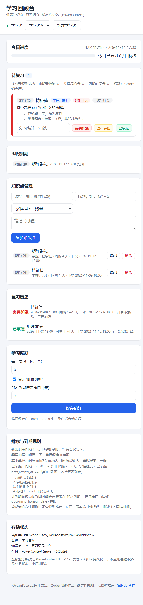
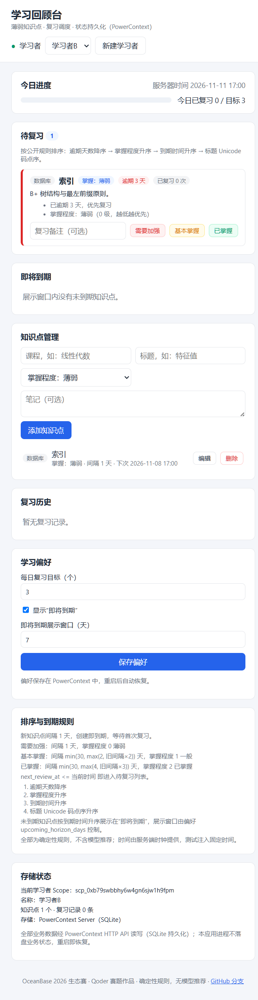

面向学生的薄弱知识点管理、复习调度与学习记录工具。把「该复习什么、复习得怎样、下次何时复习」交给可解释的确定性规则与真实 PowerContext 持久化，减少每次重新整理学习状态的时间。
目标用户：需要长期巩固薄弱知识点的大学生与自学者。
笔记、错题、复习计划分散在纸张与多个 App，每次开始学习都要重新整理「哪些还没掌握」，耗时且易漏。
没有明确的到期与优先级规则，要么反复复习已会的内容，要么遗漏真正薄弱的知识点。
进度与偏好存在本地临时状态里，关闭应用或更换环境后难以恢复，学习连续性被打断。
全部功能已在真实浏览器与真实 PowerContext 上验证（见下文截图与验证清单）。
创建/选择学习者，每人一个 PowerContext Scope，数据完全隔离，互不可见。
课程、标题、笔记、掌握程度；支持添加、编辑、删除（删除同时归档复习记录）。
按公开确定性规则排序：逾期天数 → 掌握程度 → 到期时间 → 标题码点序，可解释。
记录「需要加强/基本掌握/已掌握」，按规则更新间隔与下次复习时间，留存 Source 证据。
每日目标、即将到期窗口、当前选中学习者均持久化。
应用进程不落盘业务状态；重启后从 PowerContext 读回并实际用于列表与界面。
固定观察时刻 T2=2026-11-11T09:00:00Z 下的真实运行截图（非设计稿）。


确定性规则，不含模型智能推荐（亦不宣称）。全部规则有单元测试覆盖。
| 情形 | 新间隔 | 掌握度 |
|---|---|---|
| 新知识点 | 1 天（创建即到期） | 0 薄弱 |
| 需要加强 | 1 天 | 0 薄弱 |
| 基本掌握 | min(30, max(2, 旧间隔×2)) 天 | 1 一般 |
| 已掌握 | min(30, max(4, 旧间隔×3)) 天 | 2 已掌握 |
到期判定：next_review_at ≤ 当前时间。待复习排序：逾期天数降序 → 掌握程度升序 → 到期时间升序 → 标题 Unicode 码点序。逾期天数 = floor((now − next_review_at)/86400)。
Python stdlib 后端 + 原生 JS 前端 + 真实 PowerContext（官方 SQLite 后端）。PowerContext 是唯一业务存储。
浏览器（原生 JS，textContent 渲染防 XSS）→ app/server.py（stdlib HTTP）→ app/store.py（规则/隔离/恢复编排）→ app/powercontext_client.py（1.5.1 真实 HTTP 契约，逐请求审计）→ PowerContext Server（SQLite 持久化，基本记忆模式，无需付费模型）。
每学习者一个 Scope 作隔离边界；知识点/复习记录/偏好/app-state 以 Atomic Memory 承载（remember/list/ETag PUT 替换/lifecycle forgotten）；每次复习另存 Source 证据。应用进程不写本地业务文件，重启后读回即恢复列表与偏好。不另设业务数据库，不用 JSON 冒充。
依赖固定：powercontext[cli,server]==1.5.1（PyPI）、pytest==8.4.2、Python 3.12；uv.lock 锁定。接口契约以运行中服务器 /openapi.json 实测核实并存档。
本展示站为作品入口；核心应用按下列说明在本地运行（网站不冒充在线应用）。
# 前置：安装 uv；Python 由 uv 管理 cd qoder/study-review uv sync # 固定依赖 powercontext[cli,server]==1.5.1 # 终端 A：真实 PowerContext Server（数据只写本项目 runtime/） uv run python scripts/start_powercontext.py # 终端 B：固定样例 + 启动应用 uv run python examples/seed_sample.py --fixed uv run python -m app # http://127.0.0.1:18081 # 验证 / 测试 / 重置 uv run python examples/verify_sample.py # 8 项断言 uv run python -m pytest # 37 用例 uv run python examples/reset.py --yes # 安全软重置
uv run python -m app，启动日志打印「恢复的当前学习者」，待复习列表与偏好与重启前一致。可复现演示：STUDY_REVIEW_FIXED_NOW=2026-11-11T09:00:00Z uv run python -m app。